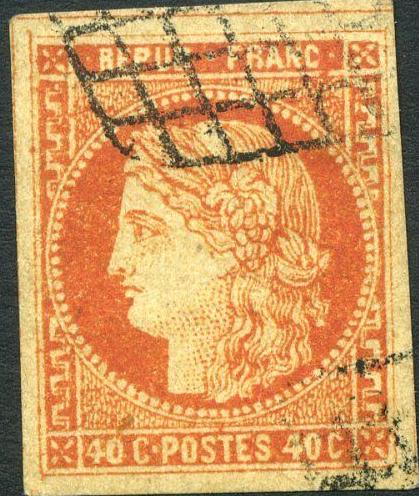
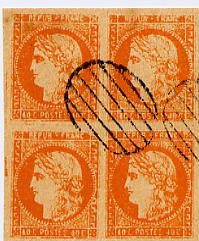
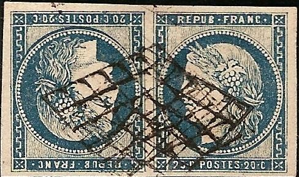
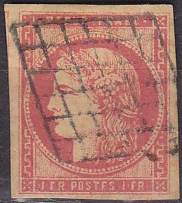
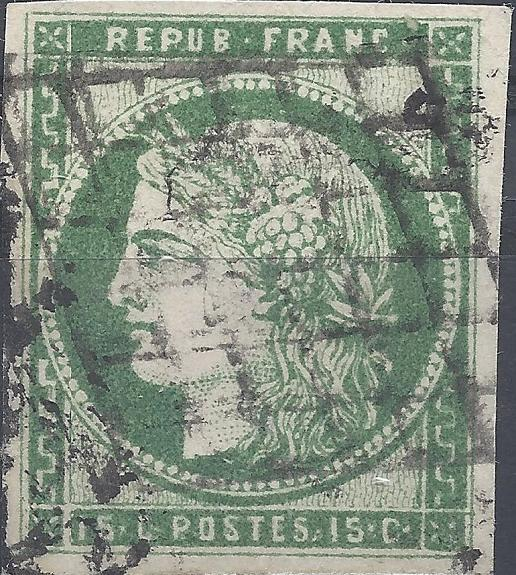
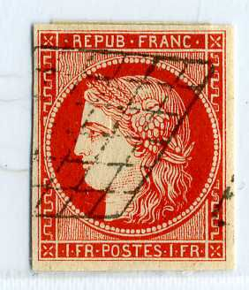
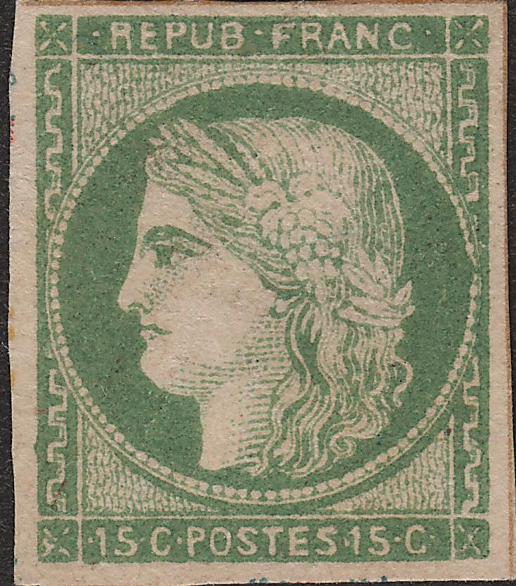

{kind=link}

Most likely Spiro forgeries
Return To Catalogue - Ceres type stamps - France Ceres type forgeries, part 2 - France Ceres type, forgeries, part 3 - Ceres, Sperati forgeries, part 1 - Ceres, Sperati forgeries, part 2 - France overview
Note: on my website many of the
pictures can not be seen! They are of course present in the
catalogue;
contact me if you want to purchase it.
Forgeries of the 1849 issue:
I have seen some Spiro forgeries, although they are not very common. They usually have a very peculiar cancel: an ellipse with horizontal lines or other fancy cancels. Spiro forgeries are not very deceptive and quite badly executed. In the genuine stamps, there should be 97 pearls around the central circle.


Most likely Spiro forgeries
(Spiro Forgeries of the 1 F value)
In the above Spiro forgeries, the ornamental border at the right hand bottom side is different, it starts from the exterior in the above forgeries, while it starts at the interior of the stamp in the genuine stamps. Also, the buste of Ceres is horizontal at the bottom (in the genuine stamps it is slanting upwards). There is a very white 'bald' spot on the head of Ceres. I've also seen the 20 c blue, 30 c brown and 40 c orange of this particular forgery type.
In the above forgeries, the 'C' of the word 'FRANC' appears to
large and the 'A' of this word too small. Also the 'C's in the
bottom inscription are too tall. For example, in the 25 c, the
'25 c' is different from the genuine stamps, the 'c' seems to be
much thinner. Even tete-beche forgeries exist (see the 20 c
above). I've also seen the unissued 25 (red) on 20 c blue of this
particular forgery set.
Several forgeries of the 1 F value (both shades), made by the
same forger; The right "FR" is placed too far to the
left when compared to a genuine stamp.
In all the above forgeries, there is a round 'pearl' in the backside of the hair of Ceres. The genuine stamps have a much more elliptic 'grape' at this spot. The words 'RAN' of 'FRANC' are placed too high. The 1 F forgery is quite common (the other values less common); I've even seen blocks of 6. I've seen the 40 c forgery of this set with a red elliptic design at the back with the words 'Phaxy & Millet' (a fancy rewritten 'Facsimile', since in French language these words sound the same):
40 c with red Phaxy & Millet 'expert mark' on the back; a
joke of the forger!

Forgeries with very pronounced 'REPUB FRANC' inscription.
 
Some forgeries, possibly made by the same forger.
Forgery of the 15 c, reduced size

Some other deceptive forgeries
Two forgeries, probably made by the same forger, I've noticed
that both have a break in the "P" of
"POSTES".
Toulouse Forgery of a 10 c tete-beche pair (Faux de Paul de
Toulouse). The paper on which this forgery is printed is porous.
1 F forgery with both "S" in "POSTES"
different from a genuine stamp.
Other primitive forgeries of the 25 c
Primitive forgery of a 20 c blue stamp.
Forgery of the 20 c black (or is it supposed to be 80 c brown?).
Note the broad chin of Ceres.
Two forgeries with the same forged cancel 'PARIS 7E/5 NOV' in the
lower right corner. The designs of the stamps are slightly
different for each value. These might be cuts from some postcard
with illustrations of stamps.
Very primitive forgeries with strange cancels.
Not sure what it this, 80 c black on lilac with very strange head
of Ceres.

Primitive forgery of the 10 c with the left part of the left
"1" too large. Next to it a 15 c forgery, made by the
same forger. These are cuts from a Menke-Huber postcard.
A set cut outs from same Menke-Huber souvenir postcard. The
borders of the stamps have brown lines.
Two forgeries probably made by the same forger.
Forgery of the 1 F with very badly done "REPUB FRANC".
Other forgeries.
For more forgeries of the France Ceres type click here, or France Ceres type (1849-1875), forgeries, part 3, Fournier or here for Sperati forgeries, part 1 or Sperati forgeries, part 2 and finally France Ceres type, Sperati forgeries, part 3 (Bordeaux).
{kind=link}
{kind=link}
{kind=link}
{kind=link}
{kind=link}